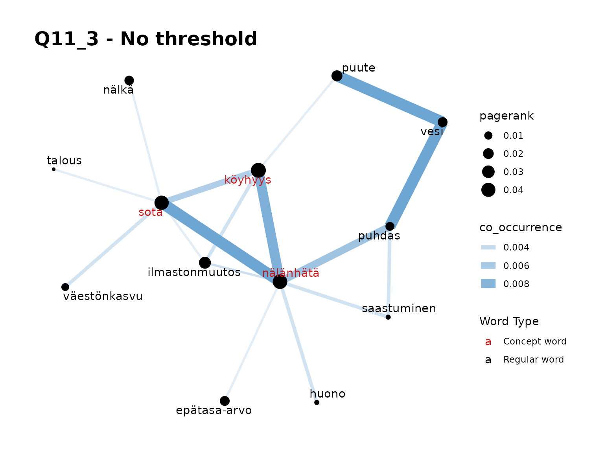

InDetail6-AnalysisExample2
Source:vignettes/web_only/InDetail6-AnalysisExample2.Rmd
InDetail6-AnalysisExample2.RmdIntroduction
This tutorial demonstrates the use of the package to analyse a survey question. It is intended to demonstrate the use of the package from start to finish in detail. In this example, we look at responses split by gender but it is expected that you might look at a variety of different splits of your data in analysis.
Installation of package.
Once the package is installed, you can load the
finnsurveytext package as below: (Other required packages
such as dplyr and stringr will also be
installed if they are not currently installed in your environment.)
The Question
We will look at our Q11_3 data from the Development Cooperation 2012 survey data which is included as sample data with our package. The specific question we’re looking at is as follows:
- q11_3 Jatka lausetta: Maailman kolme suurinta ongelmaa ovat…
(Avokysymys)
- q11_3 Continue the sentence: The world’s three biggest problems are… (Open question)
The prepared data can be found in
data/fst_dev_coop.rda.
Overview of Functions
This tutorial covers functions from throughout the package. For further details on the functions, see the previous tutorials.
The following is an excerpt from our prepared datasets:
| doc_id | paragraph_id | sentence_id | sentence | token_id | token | lemma | upos | xpos | feats | head_token_id | dep_rel | deps | misc | weight | gender | region | education_level | year_of_birth |
|---|---|---|---|---|---|---|---|---|---|---|---|---|---|---|---|---|---|---|
| 1 | 1 | 1 | saastuminen ja luonnonvarojen liikakäyttö, nälänhätä ja ylikansoittuminen | 1 | saastuminen | saastuminen | NOUN | N,Sg,Nom | Case=Nom|Number=Sing | 0 | root | NA | NA | 0.544 | Female | Etelä-Suomi | NA | 1992 |
| 1 | 1 | 1 | saastuminen ja luonnonvarojen liikakäyttö, nälänhätä ja ylikansoittuminen | 3 | luonnonvarojen | luonnonvaro | NOUN | N,Pl,Gen | Case=Gen|Number=Plur | 4 | nmod | NA | NA | 0.544 | Female | Etelä-Suomi | NA | 1992 |
| 1 | 1 | 1 | saastuminen ja luonnonvarojen liikakäyttö, nälänhätä ja ylikansoittuminen | 4 | liikakäyttö | liikakäyttö | NOUN | N,Sg,Nom | Case=Nom|Number=Sing | 1 | conj | NA | SpaceAfter=No | 0.544 | Female | Etelä-Suomi | NA | 1992 |
| 1 | 1 | 1 | saastuminen ja luonnonvarojen liikakäyttö, nälänhätä ja ylikansoittuminen | 6 | nälänhätä | nälänhätä | NOUN | N,Sg,Nom | Case=Nom|Number=Sing | 1 | conj | NA | NA | 0.544 | Female | Etelä-Suomi | NA | 1992 |
| 1 | 1 | 1 | saastuminen ja luonnonvarojen liikakäyttö, nälänhätä ja ylikansoittuminen | 8 | ylikansoittuminen | ylikansoittuminen | NOUN | N,Sg,Nom | Case=Nom|Number=Sing | 1 | conj | NA | SpacesAfter= | 0.544 | Female | Etelä-Suomi | NA | 1992 |
| 10 | 1 | 1 | eliölajien hävittäminen, raha-keskeisyys, ylikansoittuminen | 1 | eliölajien | eliölaja | NOUN | N,Pl,Gen | Case=Gen|Number=Plur | 2 | nmod | NA | NA | 0.544 | Female | Etelä-Suomi | Matriculation examination | 1994 |
| 10 | 1 | 1 | eliölajien hävittäminen, raha-keskeisyys, ylikansoittuminen | 2 | hävittäminen | hävittäminen | NOUN | N,Sg,Nom | Case=Nom|Number=Sing | 0 | root | NA | SpaceAfter=No | 0.544 | Female | Etelä-Suomi | Matriculation examination | 1994 |
| 10 | 1 | 1 | eliölajien hävittäminen, raha-keskeisyys, ylikansoittuminen | 4 | raha-keskeisyys | raha-keskeisyys | NOUN | N,Sg,Nom | Case=Nom|Number=Sing | 2 | conj | NA | SpaceAfter=No | 0.544 | Female | Etelä-Suomi | Matriculation examination | 1994 |
| 10 | 1 | 1 | eliölajien hävittäminen, raha-keskeisyys, ylikansoittuminen | 6 | ylikansoittuminen | ylikansoittuminen | NOUN | N,Sg,Nom | Case=Nom|Number=Sing | 2 | conj | NA | SpacesAfter= | 0.544 | Female | Etelä-Suomi | Matriculation examination | 1994 |
| 100 | 1 | 1 | nälänhätä, sota ja epätasa-arvoisuus | 1 | nälänhätä | nälänhätä | VERB | V,Act,InfA,Lat | Case=Lat|InfForm=1|VerbForm=Inf|Voice=Act | 0 | root | NA | SpaceAfter=No | 0.624 | Female | Helsinki-Uusimaa | Matriculation examination | 1994 |
Analysis
First, let’s consider all the data to get some initial information about the responses to this question. We will run the following functions:
For further information on these functions, please see “InDetail2-DataExploration”.
knitr::kable(
fst_summarise(fst_dev_coop)
)| Description | Respondents | No Response | Proportion | Total Words | Unique Words | Unique Lemmas |
|---|---|---|---|---|---|---|
| All responses | 945 | 25 | 0.97 | 4192 | 1132 | 994 |
| UPOS | UPOS_Name | Count | Proportion |
|---|---|---|---|
| ADJ | adjective | 389 | 0.093 |
| ADP | adposition | 24 | 0.006 |
| ADV | adverb | 64 | 0.015 |
| AUX | auxiliary | 3 | 0.001 |
| CCONJ | coordinating conjunction | 3 | 0.001 |
| DET | determiner | 28 | 0.007 |
| INTJ | interjection | 2 | 0.000 |
| NOUN | noun | 3311 | 0.790 |
| NUM | numeral | 5 | 0.001 |
| PART | particle | 29 | 0.007 |
| PRON | pronoun | 12 | 0.003 |
| PROPN | proper noun | 31 | 0.007 |
| PUNCT | punctuation | 0 | 0.000 |
| SCONJ | subordinating conjunction | 0 | 0.000 |
| SYM | symbol | 1 | 0.000 |
| VERB | verb | 278 | 0.066 |
| X | other | 12 | 0.003 |
knitr::kable(
fst_length_summary(fst_dev_coop)
)| Description | Respondents | Mean | Minimum | Q1 | Median | Q3 | Maximum |
|---|---|---|---|---|---|---|---|
| All responses- Words | 920 | 5.515 | 1 | 4 | 5 | 6 | 32 |
| All responses- Sentences | 920 | 1.015 | 1 | 1 | 1 | 1 | 3 |
Remarks:
- We have an overall response rate of 97%. We might wonder, is this response rate consist across different types of survey participants?
- Responses consist mostly of adjectives (10% of words in stopwords-removed responses), nouns (80%) and verbs (7%)
- Responses to this question are between 1 and 32 words, and between 1 and 3 sentences. Most responses seem to be 1 sentence with an average of 4-5 words.
fst_wordcloud(fst_dev_coop)Remarks:
- Top words seem to be ‘nälänhätä’, ‘köyhyys’, ‘sota’
- Next tier of common words might be: ‘vesi’ ‘puute’, ‘ihminen’, ‘ilmastonmuutos’, ‘ahneus’, ‘nälka’, ‘epätasa-arvo’
Translations
- ‘köyhyys’ = poverty
- ‘nälänhätä’ = famine
- ‘sota’ = war
- ‘vesi’ = water
- ‘puute’ = lack of
- ‘ihminen’ = human
- ‘ilmastonmuutos’ = climate change
- ‘ahneus’ = greed
- ‘nälka’ = hunger
- ‘epätasa-arvo’ = inequality
Top N-Grams
Next, we will look at the most common words (unigrams), bigrams and trigrams in that data.
fst_freq(fst_dev_coop, 10, strict = FALSE, norm = "number_resp")
#> Note:
#> Words with equal occurrence are presented in alphabetical order.
#> With `strict` = FALSE, words occurring equally often as the `number` cutoff word will be displayed.
fst_ngrams(fst_dev_coop, 10, ngrams = 2, strict = FALSE, norm = "number_resp")
#> Note:
#> N-grams with equal occurrence are presented in alphabetical order.
#> With `strict` = FALSE, n-grams occurring equally often as the `number` cutoff n-gram will be displayed.
fst_ngrams(fst_dev_coop, 10, ngrams = 3, strict = FALSE, norm = "number_resp")
#> Note:
#> N-grams with equal occurrence are presented in alphabetical order.
#> With `strict` = FALSE, n-grams occurring equally often as the `number` cutoff n-gram will be displayed.Remarks:
-
Note here that we have set
norm = 'number_resp'as we’re interested in the proportion of responses that list as specific word. - We see the top words we identified previously
- Around 1/4 of respondents list each of ‘nälänhätä’, ‘köyhyys’, ‘sota’
- We get more context on ‘vesi’ here in the bigrams. This makes sense
since ‘water’ alone doesn’t describe a common international ‘problem’.
- ‘puhdas vesi’ = clean water
- ‘vesi puute’ = lack of water
- ‘puhdas vesi puute’ is the most common trigram.
- We can assume that answers like ‘nälänhätä sota’ are probably from listing different terms in responses. So, some bigrams are more meaningful than others.
A Concept Network
Next, let’s look at some Concept Networks before we look into gender. (For further detail on the Concept Network functions, see “InDetail3-ConceptNetworkOverview”.) Our Concept Network function can be used to visualise the words that occur around our words of interest.
Again, we will set norm = 'number_resp'.
fst_concept_network(fst_dev_coop,
concepts = "köyhyys, nälänhätä, sota",
title = "Q11_3 - No threshold",
norm = "number_resp"
)
fst_concept_network(fst_dev_coop,
concepts = "köyhyys, nälänhätä, sota",
threshold = 5,
title = "Q11_3 - Threshold = 5",
norm = "number_resp"
)
fst_concept_network(fst_dev_coop,
concepts = "köyhyys, nälänhätä, sota",
threshold = 3,
title = "Q11_3 - Threshold = 3",
norm = "number_resp"
)Remarks:
- The ‘no threshold’ graph seems the most meaningful here.
- We can see that our top three words, in red, are highly related to each other in use.
- We can see the relationship between ‘vesi’ with ‘puute’ and ‘puhdas’ in this plot.
Now, let’s add more words in:
fst_concept_network(fst_dev_coop,
concepts = "köyhyys, nälänhätä, sota, ilmastonmuutos, puute, ihminen, vesi, epätasa-arvo",
title = "Q11_3 - Lots of words",
norm = "number_words"
)
fst_concept_network(fst_dev_coop,
concepts = "köyhyys, nälänhätä, sota, ilmastonmuutos, puute, ihminen, vesi, epätasa-arvo",
title = "Q11_3 - Lots of words, threshold = 3", threshold = 5,
norm = "number_resp"
)Remarks:
- The ‘no-threshold’ plot here is very busy. When we introduce a threshold, the plot splits in two which indicates that the two groups of words are only “connected” in a few responses.
Now, let’s see what do people who talk about water tend to also say in their responses:
fst_concept_network(fst_dev_coop, concepts = "vesi", title = "Q11_3 - Vesi")
fst_concept_network(fst_dev_coop, concepts = "puute, puhdas, vesi", title = "Q11_3 - ")Remarks:
- Again, we see the strong relationship with ‘puute’ and ‘puhdas’ with some other, less-frequent words too.
Comparison in responses split by gender
Now we’ve looked at responses as a whole, we consider whether gender impacts word choice. For further details on the comparison functions, please refer to “InDetail4-ComparisonFunctions”.
Summary Comparisons
We will start the comparison by looking at the summary functions:
knitr::kable(
fst_summarise_compare(fst_dev_coop, field = 'gender')
)| Description | Respondents | No Response | Proportion | Total Words | Unique Words | Unique Lemmas |
|---|---|---|---|---|---|---|
| Female | 673 | 13 | 0.98 | 2993 | 823 | 722 |
| Male | 183 | 8 | 0.96 | 795 | 383 | 354 |
| null_data | 89 | 4 | 0.96 | 404 | 225 | 208 |
knitr::kable(
fst_pos_compare(fst_dev_coop, field = 'gender')
)| UPOS | Part_of_Speech_Name | Female-Count | Female-Prop | Male-Count | Male-Prop | null_data-Count | null_data-Prop |
|---|---|---|---|---|---|---|---|
| ADJ | adjective | 276 | 0.092 | 69 | 0.087 | 44 | 0.109 |
| ADP | adposition | 19 | 0.006 | 3 | 0.004 | 2 | 0.005 |
| ADV | adverb | 44 | 0.015 | 11 | 0.014 | 9 | 0.022 |
| AUX | auxiliary | 0 | 0.000 | 3 | 0.004 | 0 | 0.000 |
| CCONJ | coordinating conjunction | 2 | 0.001 | 0 | 0.000 | 1 | 0.002 |
| DET | determiner | 24 | 0.008 | 4 | 0.005 | 0 | 0.000 |
| INTJ | interjection | 1 | 0.000 | 0 | 0.000 | 1 | 0.002 |
| NOUN | noun | 2373 | 0.793 | 636 | 0.800 | 302 | 0.748 |
| NUM | numeral | 1 | 0.000 | 1 | 0.001 | 3 | 0.007 |
| PART | particle | 18 | 0.006 | 8 | 0.010 | 3 | 0.007 |
| PRON | pronoun | 8 | 0.003 | 3 | 0.004 | 1 | 0.002 |
| PROPN | proper noun | 19 | 0.006 | 12 | 0.015 | 0 | 0.000 |
| PUNCT | punctuation | 0 | 0.000 | 0 | 0.000 | 0 | 0.000 |
| SCONJ | subordinating conjunction | 0 | 0.000 | 0 | 0.000 | 0 | 0.000 |
| SYM | symbol | 1 | 0.000 | 0 | 0.000 | 0 | 0.000 |
| VERB | verb | 195 | 0.065 | 45 | 0.057 | 38 | 0.094 |
| X | other | 12 | 0.004 | 0 | 0.000 | 0 | 0.000 |
knitr::kable(
fst_length_compare(fst_dev_coop, field = 'gender')
)| Description | Respondents | Mean | Minimum | Q1 | Median | Q3 | Maximum |
|---|---|---|---|---|---|---|---|
| Female- Words | 660 | 5.518 | 1 | 4 | 5 | 6 | 28 |
| Female- Sentences | 660 | 1.012 | 1 | 1 | 1 | 1 | 3 |
| Male- Words | 175 | 5.417 | 2 | 4 | 5 | 6 | 32 |
| Male- Sentences | 175 | 1.029 | 1 | 1 | 1 | 1 | 3 |
| null_data- Words | 85 | 5.694 | 3 | 4 | 4 | 6 | 18 |
| null_data- Sentences | 85 | 1.012 | 1 | 1 | 1 | 1 | 2 |
Remarks:
- Relatively consistent response rate, slightly higher (98%) response rate for females
- Very consistent distribution across word type! - slightly less nouns (75%) in NA but this is a much smaller sample
- Lengths of responses are similar across cohorts
Wordclouds
Now let’s consider the comparison cloud. (We will weight responses by our weight column we have included in our formatted data, and exclude responses without a gender listed.)
fst_comparison_cloud(
fst_dev_coop,
field = 'gender',
use_column_weights = TRUE,
exclude_nulls = TRUE,
max = 50
)Based on comparison cloud, it looks like:
- ‘sota’ associated with those that didn’t provide a gender in their survey
- ‘epätasa-arvo’ ‘köyhyys’, and ’nälänhätä associated with females
- ‘ilmastonmuutos’ associated with males
N-grams and top words
Now we look at common words and n-grams. Here, we will continue to exclude the responses with ‘NA’ for gender as we go on, as there are very few of these and always weight the data.
fst_freq_compare(
fst_dev_coop,
field = 'gender',
number = 10,
norm = NULL,
pos_filter = NULL,
unique_colour = "indianred",
strict = TRUE,
use_column_weights = TRUE,
exclude_nulls = TRUE
)
fst_ngrams_compare(
fst_dev_coop,
field = 'gender',
number = 10,
ngrams = 2,
pos_filter = NULL,
unique_colour = "indianred",
strict = TRUE,
use_column_weights = TRUE,
exclude_nulls = TRUE
)Remarks:
Here we see that male and female respondents have the same top 4 words, but that ‘nälänhätä’ is more frequent for females than males, and ‘ilmastonmuutos’ conversely. This may prompt further research into whether male survey participants show more concern about climate change than females in the remainder of the survey.
Also, we note that the most frequent words by female respondents occur in nearly 30% of responses whereas for the males it’s just over 20%. Perhaps there is less consistency in what males are mentioning?
For the bigrams, we can identify that
- both genders frequently list lack of water but it is mostly females who mention clean water.
Concept Network of top 4 words
Now, we’ll look at the Concept Network for the 4 top words in female and male responses. These words are ‘sota’, ‘köyhyys’, nälänhätä’, and ‘ilmastonmuutos’.
fst_concept_network_compare(
fst_dev_coop,
field = 'gender',
concepts = "köyhyys, nälänhätä, sota, ilmastonmuutos", threshold = 1,
exclude_nulls = TRUE
)Remarks:
Interestingly, our Concept Network plots of these top 4 words show that there is a much larger variety of terms used by female respondents who mention these 4 common responses.
Only part of this is explained by the fact that we have nearly 4 times as many responses from female participants since each of these plots have their vertex weights determined from only their cohort’s responses. Therefore, there may be other subgroups within the male respondents who discuss independent themes to these.
Conclusion
This tutorial demonstrates the use of finnsurveytext to
look at a single question and then consider whether gender impacts
response. Gender is just one of many ways you could split the data and
is used as an example in this context. It is likely an analyst would
also want to split the data in other ways such as age, education level,
etc.
Following the use of finnsurveytext, we have a number of
hypotheses, such as “Male survey respondents are more concerned about
climate change than females”, which could inform further analysis of the
survey as a whole.
Citation
Finnish Children and Youth Foundation: Young People’s Views on Development Cooperation 2012 [dataset]. Version 2.0 (2019-01-22). Finnish Social Science Data Archive [distributor]. http://urn.fi/urn:nbn:fi:fsd:T-FSD2821